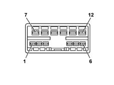

5550AB Check on windscreen wiper and headlamp washer control operation on steering column switch unit
- Path
- Test > 55 ELECTRICAL EQUIPMENT > 5550 MANOEUVRE WARNING SIGNALS > 5550A STEERING COLUMN SWITCH UNIT > 5550AB Check on windscreen wiper and headlamp washer control operation on steering column switch unit
- Kind
- test / check procedure
- Applies to
- all engines; all production periods
- Interactive page
- https://sloeber94.github.io/elrnDB-lThss/en/#/172628
Applies to: all engines; all production periods
Detach the steering column switch unit from the steering column

Using an ohmmeter, check the continuity between the STEERING COLUMN SWITCH UNIT CONNECTOR contacts in the various positions:
- Posizione [ANTIPANICO]: tra pin 2 e 8 circuito chiuso.
- Posizione [2° VELOCITA']: tra pin 2 e 8 circuito chiuso.
- Posizione [INTERMITTENTE]: tra pin 2 e 11 circuito chiuso.
- Posizione [1° VELOCITA']: tra pin 2 e 9 circuito chiuso.
- Posizione [LAVACRISTALLO/LAVAFARI]: tra pin 2 e 12 circuito chiuso, tra pin 2 e 5 circuito chiuso